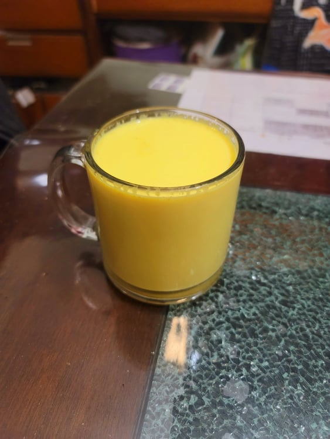

Haldi Dooh (Golden Milk)

Ingredients:
- 2 1/2 cups Milk
- 3/4 tsp Ground turmeric
- 4 Green cardamom, slightly crushed
- 1/2 inch Ginger, thinly sliced
- 6 Whole black peppercorns
- 1 inch Cinnamon, slightly crushed
- 1 tbsp Honey, or preferred sweetener
Instructions:
- Add milk to a saucepan over medium heat. Bring to right before a boil, then reduce heat to low.
- Whisk in the turmeric. Then add in the rest of the ingredients. Let simmer over low for 5 minutes.
- Remove from heat and cover. Let steep for 5 more minutes. Strain into cups and serve hot.